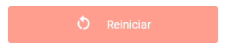

OTT DAÑADA - NO VINCULADA
Seleccion su Inconveniente:
Nivel Cero
1- Verifica si hay casos o quejas abiertas
2- Valida saldos y Bloqueo op 25
3- Validar pagina fallas generales
4- Preguntar al cliente si la luz led de la cajita esta encendida
¿Led esta encendido?
Validar Funcionamiento de control remoto
1. Confirma con el cliente si al presionar algun boton, la luz led del control enciende
SI NO ENCIENDE LUZ LED CONTROL
1. Indicarle que cambie de baterias.
2. Si sigue sin encender el led del control, hacer la siguiente prueba:
3. Si no pasa la prueba anterior: Indicarle al cliente que debe cambiar el control remoto, debe dirigirse a su tienda Claro mas cercana, indicarle que tiene un costo adicional
SI ENCIENDE LUZ LED CONTROL - APLICA PARA CONTROLES ANDROID TV
1. Realizar la vinculacion del control presionando MUTE 🔇 y la flecha a la izquierda ⬅ por mas de tres segundos
2. Sigue las instrucciones de la pantalla
SI ENCIENDE LUZ LED CONTROL - APLICA PARA LOS CONTROLES ROJO
1. Realizar la vinculacion del control con la cajita
2. Presiona OK y MUTE 🔇 al mismo tiempo por 5 segundos
3. Espera que el led rojo enciende y apague dos (2) veces
4. Apunta el control a la cajita e ingresa el siguiente codigo: 04056
5. led rojo encendera y apagara dos (2) veces
6. Presionar el boton de apagar para que valide, de lo contrario repetir el proceso
¿Encendio la Cajita?
CONEXIONES
1. Indicar al cliente que desconecte y conecte la cajita
2. Si no enciende, indicale que lo conecte en otro tomacorriente
¿Encendio algun Led?
¿Coincide Cantidad de equipos en PISA y la GUI?
Acciones
Para controles de claro (No android)
1. Solicitar al cliente que con el control remoto presione: Menu ▶ Ajustes del Sistema ▶ mas ▶ Reincio de fabrica.
2. Esperar 1 minuto para el reinicio de la cajita y validar si carga la guia
3. Ingresa nuevamente a la GUI y confirma los equipos vinculados
Para controles Android
Envia Comando en Skyway
